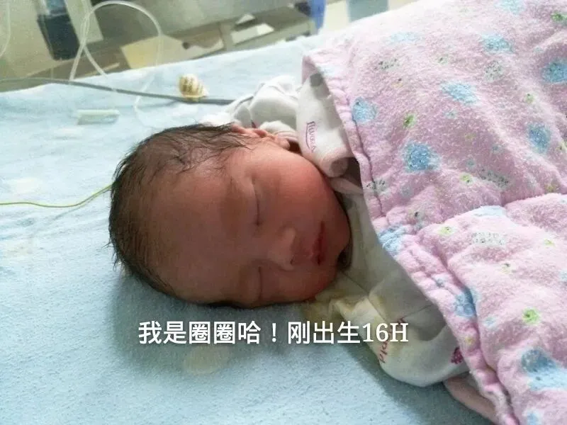
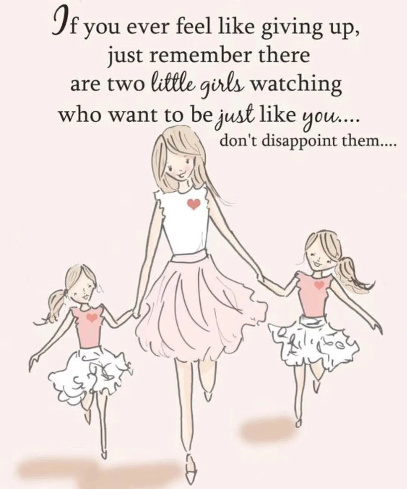
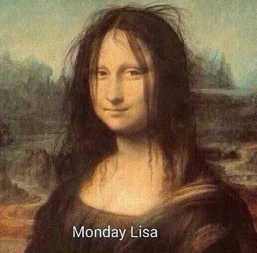
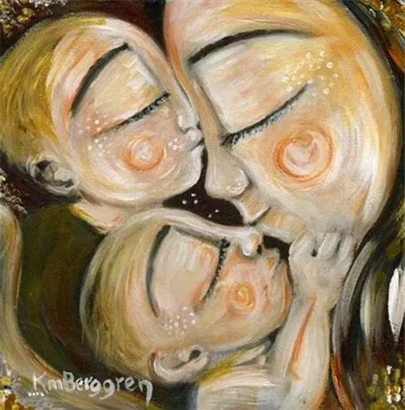
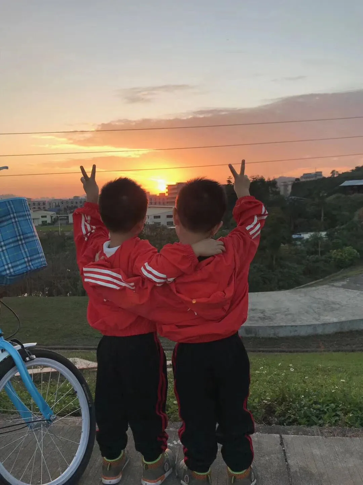

孖仔帮
公众号ID：twinsbang
关注
文|圆圈妈
网图|侵删
一直在捉摸着要准备点什么生日礼物送给圆圈哥俩，思来想去还是算了，看那一屋子的玩具，貌似他们并不缺啥，而且都是些很物质的东西，太俗了，不如来点更“俗”的，比如学习小土给儿子们写篇生日文吧！
1
亲爱的崽儿们，圆圆&圈圈：
今天是你们哥俩的5岁生日，妈妈祝贺你们两兄弟生日快乐哦！
早晨，圈圈还说，我怎么才5岁啊，我想要快点长大，这样就可以超过爸爸了。
我苦笑了，我也巴不得你们一觉醒来就18岁，然后就有理由把你们赶出家门，自力更生。
我想，如果那天真的来了，估计哭的最惨的就是妈妈而不是你们。
一边盼望着你们快点长大，一边祈求时光再慢一点，还想再多抱抱你们。
5年前的今天，妈妈第一次看到你们。
一个身体，三颗心跳在一起9个月，熟悉又陌生，终于见面了。
第一次见面，港真，妈妈没有很激动哦，甚至没有太多感觉，打了麻醉，好累。
你们俩出生那会儿，皮肤黑黝黝，皱巴巴的，像个小老头，任谁看了都嫌弃。
我对自己即将要当妈妈这件事，有点后知后觉，不是我反应迟钝，而是…
你们俩一起来了，我有点呛到了！
怀上双胞胎，让我感觉自己好像得了重病，整个孕期都是担惊受怕地过来，生怕没得医。
真正意识到自己要做妈妈了，是在做完四维彩超后，拿到报告结果，看到你们的第一张照片，我哽咽了，你们的爸爸沉默了。
我看着你们的爸爸，才发现他再也不是当年那个无忧无虑哼着双节棍的少年郎；
你们的爸爸看我的眼神，也让我认清一个事实：我也不再是当年那个性格像龙卷风一样的小姐姐。
我们即将是你们在未来18年内的唯一依靠，享有一个新的身份，一个让一个旁观者听起来很伟大但却让当事人瑟瑟发抖的身份---为人父母。
2
你们出生后，我每天都感觉好DOWN，好SANG，都说生双胞胎很幸福，也有例外吧，看我被你们折磨得多惨，长期缺觉，缺爱，缺钱…
有时候，好希望自己是一条咸鱼，没有梦想，没有追求，那样也许就可以心安理得一些，可以活得潇洒一些。
可是，每次看着你们仰着小脸，用满脸崇拜的眼神看着我时，我知道，你们是有多想成为像妈妈那样的超级英雄。
我不想让你们失望！
特么再难也要把你们拉扯大！
好在，你们总算是手下留情了，并没有把我们折腾太久，
除了一岁前，你们真的很难带，综合而言，我觉得你们挺让人省心的，
2岁后，你们基本处于放养状态，随便玩，随便哭，随便爱咋滴咋滴….
一切都水到渠成。
看着你们一天天长大，从软糯的小肉团，变成上蹿下跳的小雄狮，妈妈心里特别骄傲呢。
30岁后，我经常会有中年危机感，老觉得自己百无一是，但只要看到身边有你们在，无忧无虑地玩在一起，我又浑身充满了力量和信心。
谁说我一无是处，看，我可以把一对双胞胎养到这么大，牛逼吧！
你们一定体会不到妈妈说这句话时那种自豪感，因为你们想象不到，这一路走来，把你们养到这么大，这么壮，这么高，有多难！？
妈妈不是在卖惨，而是真的很惨。
我本多愁善感，偏偏让我遇上双胎妊娠这病，足足折腾了我9个月，感觉像被钉在十字架上熬了半个世纪！
我还爱睡懒觉，偏偏让我遇上你们两个睡渣，天天像炸毛的蒙娜丽莎，想笑笑不得，想哭哭不出来。
我还是欧巴剧的超级迷妹，偏偏让我碰上两只精力充沛的你们，每天要给你们读绘本，念唐诗，唱儿歌…话说我已经5年没有正儿八经地看过一部热播剧了。
每次你们感冒生病，哪怕只是一个流鼻涕，咳嗽，我都会紧张到脑壳大，心碎，肝颤，肺炸，胃顶住…
我总以为我不合群，难相处，任谁都无法改变，可是我和你们的爷爷奶奶却能同在一屋檐下，一路磕磕碰碰（打打闹闹）坚持了2年，只为了你们生活在一个有爱温馨的家庭。
为了让两老留下来照顾你们，从来不撒谎的我，变着法子说了好多甜言蜜语，从来不卖关子，从来不耍心机，从来不“绿茶婊”的我...沦陷了！
你们的外公说我自从当妈之后，成熟了不少。
我苦笑，每天面对你们这两只四角吞金兽，不被催熟才怪。
我觉得，这世上唯一让我往西不敢往东，让我方，绝对不敢圆，让我滚，绝对不敢用“走”，恐怕只有你们了。
不是我给你们什么特权，而是...我越来越爱你们了。
我时常在想，要是没有被你们俩同时砸中，
我和你们的爸爸，也许会在哪个角落哪里凉快，哪里去，
又或许正在苦恼着二胎生还是不生。
我生来平庸，难免失望无力，幸遇你们，不负盛世年华！
是你们丰富了我的人生轨迹，带给我不一样的生活体验。
可能在这个世界上，
除了你们，没有其他人，
可以让我如此清晰地看到自己对他人的影响力，从而有动力去探寻自己的成长经历，
去完善自己的不足，
去实现全新的自我成长。
《二孩妈妈一定要懂的心理学》冯颖
儿子们，谢谢你们哦！
3
马上要读大班的你们，让我很焦虑。
听说我们小区的学位很不好；
据说今年深圳高中录取率只有46%；
听说隔壁的弟弟才4岁已经会加减法了；
而你们只会在窗边数小豆豆，天天问我1+1为什么等于2...
在如此大环境下，我也不落俗套了。
今年受疫情影响，陪伴你们在家的6个月里，我时常纠结着要不要提前教你们拼音，识字，数数...
朋友的一番话让我停止了焦虑：”你希望自己的孩子将来成为怎样的人，那就作死地朝那方面发展。是参加特殊的教育方法，在十岁就完成高中课程的小神童，还是按步就班和别的小孩子一起成长？”
小神童就算了，还是顺其自然吧，这个时候的你们最重要的任务是玩，想怎么玩就怎么玩吧！
我希望等你们长大后，回忆起童年是快乐的，温暖的，自由的；
希望你们在尽情的玩耍中感知生活的美好，充满对生活的热爱。
至于成才，我和你们的爸爸基因都不差，相信只要培养好你们的学习能力和学习习惯，文化课基本上难不倒你们（说这句话，不知道以后会不会被打脸-_-||）
你们幼儿园发的成长手册，每学期都要完成，我特别头大，
我看见其他模范家长写的密密麻麻，满满的一大本，而我总是一片空白，
我好像对你们一点要求都没有，
如果非要有，那就是...
愿你们是鹿与少年，
愿所有真诚被看见，所有善良有人懂，
眼睛里睡着星星，内心里住着太阳。
最后，祝愿儿子们，5岁生日快乐，健康成长。
-----写于2020年7月23日
插播一则吃生日蛋糕时的小插曲
圆圈爸让圆圈哥俩说一些感谢的话，
“妈妈，谢谢你给我们煮的饭菜，”
“妈妈，谢谢你给我们买的玩具，"
"妈妈，谢谢你带我们出去压马路，"
....
打住！其实，我比较想听到他们这样说：“妈妈，谢谢你是打不死的小强，被我们砸中了还能坚强爬起来，咬咬牙面对现实！O(∩_∩)O~”
-END-
今日互动话题
#你家双胞胎多大了？有什么祝福的话想说的吗#
评论区聊一聊呗！
微信公众号：孖仔帮
ID : twinsbang
专注双胞胎孕育，养育，教育经验分享
扫码关注我们
点一下你会更好看耶





